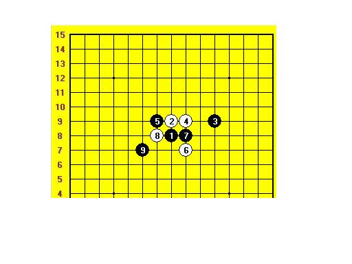

真心和风尘的原名是甚么----兼问大残月
首页
妖刀天下
#1 真心和风尘的原名是甚么----兼问大残月 作者：wrwak 发表时间：2008-11-9 21:31:06
.........谁知道
#2 Re:真心和风尘的原名是甚么 作者：wrwak 发表时间：2008-11-9 21:34:46
发错区了 我补一幅图 这个白棋最强防守在哪？

#3 Re:真心和风尘的原名是甚么 作者：冷面孤煞 发表时间：2008-11-9 22:48:32
4手的点在5手位子
 .........谁知道
.........谁知道 发错区了 我补一幅图 这个白棋最强防守在哪？
发错区了 我补一幅图 这个白棋最强防守在哪？